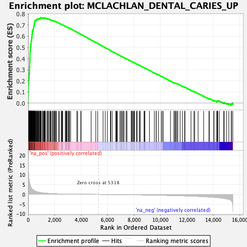
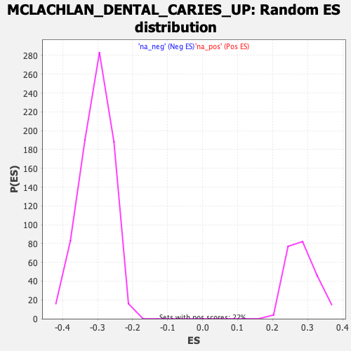

| | | Dataset | DE_genes |
| Phenotype | NoPhenotypeAvailable |
| Upregulated in class | na_pos |
| GeneSet | MCLACHLAN_DENTAL_CARIES_UP |
| Enrichment Score (ES) | 0.76697963 |
| Normalized Enrichment Score (NES) | 2.6987562 |
| Nominal p-value | 0.0 |
| FDR q-value | 0.0 |
| FWER p-Value | 0.0 |
Table: GSEA Results Summary

Fig 1: Enrichment plot: MCLACHLAN_DENTAL_CARIES_UP
Profile of the Running ES Score & Positions of GeneSet Members on the Rank Ordered List
| PROBE | GENE SYMBOL | GENE_TITLE | RANK IN GENE LIST | RANK METRIC SCORE | RUNNING ES | CORE ENRICHMENT | | 1 | CCL8 | | | 7 | 15.196 | 0.0351 | Yes |
| 2 | FCER1G | | | 8 | 15.109 | 0.0704 | Yes |
| 3 | PLEK | | | 12 | 13.584 | 0.1019 | Yes |
| 4 | ALOX5AP | | | 17 | 12.616 | 0.1311 | Yes |
| 5 | BCL2A1 | | | 18 | 12.506 | 0.1604 | Yes |
| 6 | IL1RN | | | 39 | 9.443 | 0.1811 | Yes |
| 7 | LY96 | | | 47 | 8.885 | 0.2014 | Yes |
| 8 | SRGN | | | 59 | 8.030 | 0.2195 | Yes |
| 9 | CHI3L2 | | | 74 | 7.299 | 0.2356 | Yes |
| 10 | TREM1 | | | 78 | 7.063 | 0.2519 | Yes |
| 11 | CD37 | | | 85 | 6.583 | 0.2669 | Yes |
| 12 | TYROBP | | | 94 | 6.282 | 0.2811 | Yes |
| 13 | S100A8 | | | 96 | 6.252 | 0.2956 | Yes |
| 14 | CD53 | | | 101 | 6.147 | 0.3097 | Yes |
| 15 | FPR1 | | | 103 | 6.054 | 0.3238 | Yes |
| 16 | CHI3L1 | | | 116 | 5.713 | 0.3364 | Yes |
| 17 | LCP1 | | | 118 | 5.665 | 0.3495 | Yes |
| 18 | PLAC8 | | | 119 | 5.627 | 0.3627 | Yes |
| 19 | LCP2 | | | 124 | 5.542 | 0.3754 | Yes |
| 20 | CCL3 | | | 130 | 5.365 | 0.3876 | Yes |
| 21 | EVI2B | | | 137 | 5.249 | 0.3995 | Yes |
| 22 | FCGR3B | | | 139 | 5.203 | 0.4116 | Yes |
| 23 | RAC2 | | | 142 | 5.131 | 0.4234 | Yes |
| 24 | C3AR1 | | | 143 | 5.080 | 0.4353 | Yes |
| 25 | MNDA | | | 146 | 4.989 | 0.4468 | Yes |
| 26 | SAMSN1 | | | 150 | 4.927 | 0.4581 | Yes |
| 27 | S100A9 | | | 156 | 4.688 | 0.4688 | Yes |
| 28 | UCP2 | | | 172 | 4.435 | 0.4782 | Yes |
| 29 | SERPINA1 | | | 174 | 4.389 | 0.4883 | Yes |
| 30 | CCR1 | | | 175 | 4.383 | 0.4986 | Yes |
| 31 | FGL2 | | | 188 | 4.141 | 0.5075 | Yes |
| 32 | CLEC7A | | | 199 | 3.829 | 0.5158 | Yes |
| 33 | CCL18 | | | 201 | 3.823 | 0.5246 | Yes |
| 34 | FCN1 | | | 205 | 3.751 | 0.5332 | Yes |
| 35 | BCL3 | | | 226 | 3.524 | 0.5401 | Yes |
| 36 | CSF2RB | | | 228 | 3.521 | 0.5483 | Yes |
| 37 | CYBB | | | 231 | 3.449 | 0.5562 | Yes |
| 38 | FCGR2A | | | 246 | 3.320 | 0.5631 | Yes |
| 39 | TNFAIP6 | | | 257 | 3.183 | 0.5698 | Yes |
| 40 | ARHGDIB | | | 262 | 3.115 | 0.5769 | Yes |
| 41 | ACSL1 | | | 265 | 3.076 | 0.5839 | Yes |
| 42 | CCL2 | | | 284 | 2.886 | 0.5895 | Yes |
| 43 | CD48 | | | 287 | 2.880 | 0.5961 | Yes |
| 44 | HCK | | | 291 | 2.844 | 0.6025 | Yes |
| 45 | LYN | | | 293 | 2.839 | 0.6091 | Yes |
| 46 | POU2AF1 | | | 294 | 2.836 | 0.6157 | Yes |
| 47 | CA12 | | | 304 | 2.777 | 0.6216 | Yes |
| 48 | NCF4 | | | 313 | 2.656 | 0.6273 | Yes |
| 49 | SAA1 | | | 314 | 2.654 | 0.6335 | Yes |
| 50 | GLRX | | | 320 | 2.627 | 0.6393 | Yes |
| 51 | C5AR1 | | | 321 | 2.626 | 0.6455 | Yes |
| 52 | CD74 | | | 335 | 2.553 | 0.6506 | Yes |
| 53 | IL1B | | | 343 | 2.495 | 0.6560 | Yes |
| 54 | PIM2 | | | 367 | 2.365 | 0.6600 | Yes |
| 55 | HBB | | | 380 | 2.305 | 0.6646 | Yes |
| 56 | IFI30 | | | 398 | 2.213 | 0.6686 | Yes |
| 57 | LBP | | | 411 | 2.115 | 0.6728 | Yes |
| 58 | CD55 | | | 413 | 2.110 | 0.6776 | Yes |
| 59 | HCAR3 | | | 415 | 2.104 | 0.6825 | Yes |
| 60 | SAT1 | | | 437 | 1.983 | 0.6858 | Yes |
| 61 | C1QB | | | 441 | 1.975 | 0.6902 | Yes |
| 62 | PLA2G7 | | | 442 | 1.968 | 0.6948 | Yes |
| 63 | CTSS | | | 450 | 1.936 | 0.6988 | Yes |
| 64 | CD4 | | | 455 | 1.918 | 0.7031 | Yes |
| 65 | PTPRC | | | 469 | 1.858 | 0.7066 | Yes |
| 66 | SERPINE2 | | | 472 | 1.853 | 0.7107 | Yes |
| 67 | SOD2 | | | 478 | 1.833 | 0.7147 | Yes |
| 68 | ADAMDEC1 | | | 481 | 1.829 | 0.7188 | Yes |
| 69 | NAMPT | | | 486 | 1.817 | 0.7228 | Yes |
| 70 | CFB | | | 489 | 1.800 | 0.7269 | Yes |
| 71 | CYTIP | | | 493 | 1.779 | 0.7309 | Yes |
| 72 | EVI2A | | | 496 | 1.778 | 0.7349 | Yes |
| 73 | CTSC | | | 508 | 1.718 | 0.7382 | Yes |
| 74 | NCF2 | | | 548 | 1.590 | 0.7393 | Yes |
| 75 | SLPI | | | 557 | 1.566 | 0.7425 | Yes |
| 76 | HCLS1 | | | 573 | 1.534 | 0.7451 | Yes |
| 77 | RNASE6 | | | 634 | 1.397 | 0.7444 | Yes |
| 78 | FCGR2B | | | 639 | 1.390 | 0.7474 | Yes |
| 79 | HLA-DRB6 | | | 643 | 1.384 | 0.7504 | Yes |
| 80 | MS4A4A | | | 663 | 1.354 | 0.7524 | Yes |
| 81 | HLA-DPA1 | | | 692 | 1.288 | 0.7535 | Yes |
| 82 | NFIL3 | | | 745 | 1.204 | 0.7529 | Yes |
| 83 | HLA-DQA1 | | | 746 | 1.203 | 0.7557 | Yes |
| 84 | LYZ | | | 785 | 1.131 | 0.7559 | Yes |
| 85 | CLEC2B | | | 789 | 1.127 | 0.7583 | Yes |
| 86 | GPNMB | | | 793 | 1.121 | 0.7608 | Yes |
| 87 | PI3 | | | 858 | 1.020 | 0.7589 | Yes |
| 88 | PLAUR | | | 867 | 1.013 | 0.7608 | Yes |
| 89 | MSR1 | | | 925 | 0.949 | 0.7593 | Yes |
| 90 | TIMP1 | | | 930 | 0.945 | 0.7612 | Yes |
| 91 | CCL5 | | | 937 | 0.940 | 0.7630 | Yes |
| 92 | SORL1 | | | 940 | 0.938 | 0.7651 | Yes |
| 93 | FAM49B | | | 945 | 0.929 | 0.7670 | Yes |
| 94 | TNFAIP8 | | | 994 | 0.865 | 0.7659 | No |
| 95 | MS4A6A | | | 1084 | 0.767 | 0.7618 | No |
| 96 | TNFRSF21 | | | 1102 | 0.753 | 0.7625 | No |
| 97 | CXCL13 | | | 1108 | 0.748 | 0.7639 | No |
| 98 | CD209 | | | 1115 | 0.744 | 0.7652 | No |
| 99 | LAPTM5 | | | 1181 | 0.693 | 0.7626 | No |
| 100 | G0S2 | | | 1209 | 0.673 | 0.7624 | No |
| 101 | SLAMF8 | | | 1216 | 0.665 | 0.7635 | No |
| 102 | CHST15 | | | 1239 | 0.651 | 0.7636 | No |
| 103 | HLA-DPB1 | | | 1240 | 0.651 | 0.7651 | No |
| 104 | IL11 | | | 1273 | 0.625 | 0.7645 | No |
| 105 | LTB | | | 1307 | 0.609 | 0.7638 | No |
| 106 | MT2A | | | 1418 | 0.560 | 0.7579 | No |
| 107 | CYBA | | | 1467 | 0.534 | 0.7560 | No |
| 108 | LSP1 | | | 1478 | 0.527 | 0.7565 | No |
| 109 | HLA-DRA | | | 1481 | 0.526 | 0.7576 | No |
| 110 | ABCA1 | | | 1569 | 0.485 | 0.7531 | No |
| 111 | C3 | | | 1577 | 0.480 | 0.7537 | No |
| 112 | CTSH | | | 1667 | 0.448 | 0.7489 | No |
| 113 | VCAM1 | | | 1695 | 0.435 | 0.7482 | No |
| 114 | KYNU | | | 1739 | 0.412 | 0.7463 | No |
| 115 | KPNA2 | | | 1839 | 0.375 | 0.7407 | No |
| 116 | APOC1 | | | 1856 | 0.369 | 0.7405 | No |
| 117 | SELE | | | 1867 | 0.363 | 0.7407 | No |
| 118 | HLA-DQB1 | | | 1952 | 0.341 | 0.7360 | No |
| 119 | SLC7A11 | | | 1965 | 0.336 | 0.7360 | No |
| 120 | RNASE1 | | | 1982 | 0.333 | 0.7357 | No |
| 121 | CSF1R | | | 1994 | 0.328 | 0.7358 | No |
| 122 | CD79A | | | 2009 | 0.323 | 0.7356 | No |
| 123 | APOE | | | 2087 | 0.301 | 0.7313 | No |
| 124 | CD163 | | | 2089 | 0.301 | 0.7319 | No |
| 125 | TNFAIP3 | | | 2132 | 0.286 | 0.7298 | No |
| 126 | C1QA | | | 2294 | 0.244 | 0.7198 | No |
| 127 | ICAM1 | | | 2366 | 0.229 | 0.7157 | No |
| 128 | HLA-DRB1 | | | 2510 | 0.205 | 0.7068 | No |
| 129 | ALOX5 | | | 2516 | 0.205 | 0.7069 | No |
| 130 | CFD | | | 2550 | 0.200 | 0.7052 | No |
| 131 | SKAP2 | | | 2601 | 0.190 | 0.7024 | No |
| 132 | IL13RA1 | | | 2608 | 0.189 | 0.7025 | No |
| 133 | CD44 | | | 2804 | 0.161 | 0.6900 | No |
| 134 | CXCL1 | | | 2830 | 0.158 | 0.6888 | No |
| 135 | RAB31 | | | 2878 | 0.152 | 0.6860 | No |
| 136 | SLC46A3 | | | 2883 | 0.152 | 0.6861 | No |
| 137 | CD14 | | | 2927 | 0.147 | 0.6837 | No |
| 138 | CEBPD | | | 2951 | 0.145 | 0.6825 | No |
| 139 | CXCL9 | | | 3057 | 0.135 | 0.6759 | No |
| 140 | MRC1 | | | 3064 | 0.135 | 0.6758 | No |
| 141 | CTSB | | | 3066 | 0.134 | 0.6761 | No |
| 142 | SOCS3 | | | 3074 | 0.133 | 0.6759 | No |
| 143 | ADM | | | 3133 | 0.128 | 0.6724 | No |
| 144 | MTHFD2 | | | 3210 | 0.121 | 0.6677 | No |
| 145 | ITGB2 | | | 3683 | 0.088 | 0.6370 | No |
| 146 | HLA-DMA | | | 3739 | 0.085 | 0.6336 | No |
| 147 | EIF1AY | | | 3979 | 0.071 | 0.6181 | No |
| 148 | SEL1L3 | | | 3999 | 0.070 | 0.6170 | No |
| 149 | PTGS2 | | | 4760 | 0.028 | 0.5672 | No |
| 150 | IL10RA | | | 5112 | 0.010 | 0.5442 | No |
| 151 | HLA-DMB | | | 5259 | 0.003 | 0.5346 | No |
| 152 | CORO1A | | | 5665 | -0.019 | 0.5081 | No |
| 153 | MT1X | | | 5827 | -0.028 | 0.4976 | No |
| 154 | CXCR4 | | | 5988 | -0.038 | 0.4872 | No |
| 155 | KDM5D | | | 6220 | -0.054 | 0.4722 | No |
| 156 | SLA | | | 6253 | -0.056 | 0.4702 | No |
| 157 | BIRC3 | | | 6358 | -0.062 | 0.4635 | No |
| 158 | BLNK | | | 6619 | -0.082 | 0.4467 | No |
| 159 | SLC2A3 | | | 6660 | -0.085 | 0.4442 | No |
| 160 | VAMP8 | | | 6696 | -0.088 | 0.4422 | No |
| 161 | SLC1A4 | | | 6740 | -0.090 | 0.4395 | No |
| 162 | ORM1 | | | 6933 | -0.106 | 0.4272 | No |
| 163 | IL7R | | | 7020 | -0.112 | 0.4218 | No |
| 164 | CAPG | | | 7045 | -0.114 | 0.4205 | No |
| 165 | IGFLR1 | | | 7046 | -0.114 | 0.4208 | No |
| 166 | GZMB | | | 7144 | -0.122 | 0.4147 | No |
| 167 | CPVL | | | 7180 | -0.125 | 0.4127 | No |
| 168 | SPP1 | | | 7256 | -0.132 | 0.4081 | No |
| 169 | CCR2 | | | 7409 | -0.145 | 0.3985 | No |
| 170 | MAN2B1 | | | 7410 | -0.145 | 0.3988 | No |
| 171 | NAP1L1 | | | 7475 | -0.150 | 0.3949 | No |
| 172 | CFI | | | 7794 | -0.179 | 0.3745 | No |
| 173 | MMP9 | | | 7803 | -0.179 | 0.3744 | No |
| 174 | CD1D | | | 7843 | -0.183 | 0.3723 | No |
| 175 | FKBP11 | | | 7908 | -0.190 | 0.3685 | No |
| 176 | COL15A1 | | | 7957 | -0.194 | 0.3658 | No |
| 177 | MGP | | | 8000 | -0.198 | 0.3635 | No |
| 178 | IGFBP4 | | | 8043 | -0.203 | 0.3613 | No |
| 179 | CD27 | | | 8199 | -0.218 | 0.3516 | No |
| 180 | SASH3 | | | 8239 | -0.222 | 0.3496 | No |
| 181 | LRCH4 | | | 8402 | -0.240 | 0.3395 | No |
| 182 | CRLF1 | | | 8417 | -0.242 | 0.3391 | No |
| 183 | MS4A1 | | | 8486 | -0.250 | 0.3353 | No |
| 184 | MT1G | | | 8760 | -0.281 | 0.3180 | No |
| 185 | IL6 | | | 8782 | -0.284 | 0.3173 | No |
| 186 | THBS4 | | | 8826 | -0.289 | 0.3152 | No |
| 187 | PTGER4 | | | 9166 | -0.331 | 0.2937 | No |
| 188 | NNMT | | | 9536 | -0.378 | 0.2704 | No |
| 189 | GABBR1 | | | 9678 | -0.401 | 0.2621 | No |
| 190 | MCL1 | | | 9684 | -0.402 | 0.2627 | No |
| 191 | REEP1 | | | 9846 | -0.424 | 0.2531 | No |
| 192 | DDX3Y | | | 10058 | -0.456 | 0.2403 | No |
| 193 | F13A1 | | | 10137 | -0.468 | 0.2363 | No |
| 194 | CXCL5 | | | 10222 | -0.480 | 0.2319 | No |
| 195 | ANPEP | | | 10759 | -0.562 | 0.1981 | No |
| 196 | IRF8 | | | 11011 | -0.599 | 0.1830 | No |
| 197 | CD84 | | | 11091 | -0.614 | 0.1793 | No |
| 198 | TNFRSF1B | | | 11113 | -0.617 | 0.1793 | No |
| 199 | PLAU | | | 11174 | -0.631 | 0.1769 | No |
| 200 | CD93 | | | 11248 | -0.646 | 0.1736 | No |
| 201 | SSR4 | | | 11317 | -0.660 | 0.1707 | No |
| 202 | RPS4Y1 | | | 11489 | -0.697 | 0.1611 | No |
| 203 | PECAM1 | | | 11663 | -0.735 | 0.1514 | No |
| 204 | RGS2 | | | 11833 | -0.769 | 0.1422 | No |
| 205 | CXCL12 | | | 11856 | -0.773 | 0.1425 | No |
| 206 | AQP3 | | | 12310 | -0.879 | 0.1149 | No |
| 207 | TYMP | | | 12538 | -0.937 | 0.1022 | No |
| 208 | ACP5 | | | 12587 | -0.950 | 0.1012 | No |
| 209 | TRIB1 | | | 12849 | -1.028 | 0.0865 | No |
| 210 | IRF4 | | | 13264 | -1.160 | 0.0621 | No |
| 211 | INHBA | | | 13665 | -1.317 | 0.0389 | No |
| 212 | LRRC15 | | | 13705 | -1.333 | 0.0395 | No |
| 213 | CHL1 | | | 14038 | -1.495 | 0.0212 | No |
| 214 | SERPINA3 | | | 14040 | -1.495 | 0.0246 | No |
| 215 | PTP4A3 | | | 14260 | -1.634 | 0.0141 | No |
| 216 | SFRP4 | | | 14273 | -1.648 | 0.0171 | No |
| 217 | SERPINB2 | | | 14324 | -1.672 | 0.0178 | No |
| 218 | GUSBP11 | | | 14337 | -1.680 | 0.0209 | No |
| 219 | MZB1 | | | 14458 | -1.760 | 0.0172 | No |
| 220 | STAB1 | | | 14778 | -2.043 | 0.0010 | No |
| 221 | IER3 | | | 14825 | -2.088 | 0.0029 | No |
| 222 | ANGPTL2 | | | 15003 | -2.304 | -0.0034 | No |
| 223 | ARPC1B | | | 15168 | -2.571 | -0.0081 | No |
| 224 | CYP1A1 | | | 15351 | -3.175 | -0.0126 | No |
| 225 | MAFF | | | 15377 | -3.396 | -0.0063 | No |
| 226 | MMP1 | | | 15468 | -5.316 | 0.0002 | No |
Table: GSEA details [plain text format]

Fig 2: MCLACHLAN_DENTAL_CARIES_UP: Random ES distribution
Gene set null distribution of ES for MCLACHLAN_DENTAL_CARIES_UP